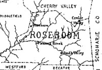

by
Stefan Bielinski
The story of the Roseboom family in early Albany begins with the appearance of Hendrick Janse in Beverwyck before 1660. His marriage to Gysbertje Lansing established the family in the city and beyond.
In 1697 the households of Hendrick Sr. and four sons appeared on the Albany census. All five of these Rosebooms were primarily fur traders. The portal on the north side of the city stockade following Pearl Street was known as "Roseboom's Gate."
In 1720, five Roseboom men were included on a list of city freeholders. In 1742, the number of Roseboom freeholders had grown to nine men. Unlike many other New Netherland-era families, the Rosebooms appear to have been almost exclusively resident in the city of Albany.
In 1756, eleven Roseboom-named households appeared on the city census of householders including the home of "apothecary" Jacob Roseboom. Three others were headed by widows. At that time, the Rosebooms were among the most well-established families in the city of Albany.
In 1764, a petition signed by Albany merchants included the names of five family members including Myndert H. Roseboom - a prominent merchant and Revolutionary war army officer.
In 1790, four Roseboom named households remained in the city.
In 1815, only the Hudson Avenue home of widow Hester Roseboom was listed in the Albany city directory. 
Since then, descendants of the Albany Rosebooms have spread across New York and across the country as well. Over the years, Roseboom family members have recalled the family's earlier days in a number of interesting ways.
notes
 Sources: This family
outline is derived chiefly from family
and community-based resources. Chief among
these are: A brief
history of the ancestors and descendants of John Roseboom (1739-1805)
and of Jesse Johnson (1745-1832), compiled by Catharine Roseboom and
others (Cherry Valley, NY, 1897). Database on-line at Provo, UT via The
Generations Network, Inc., 2005. Link
to online bible records. Anecdotal narrative material on the family has
been made available on the Fort
Klock website.
Sources: This family
outline is derived chiefly from family
and community-based resources. Chief among
these are: A brief
history of the ancestors and descendants of John Roseboom (1739-1805)
and of Jesse Johnson (1745-1832), compiled by Catharine Roseboom and
others (Cherry Valley, NY, 1897). Database on-line at Provo, UT via The
Generations Network, Inc., 2005. Link
to online bible records. Anecdotal narrative material on the family has
been made available on the Fort
Klock website.
first posted: 11/15/04; revised 2/1/08; last revised 9/8/12